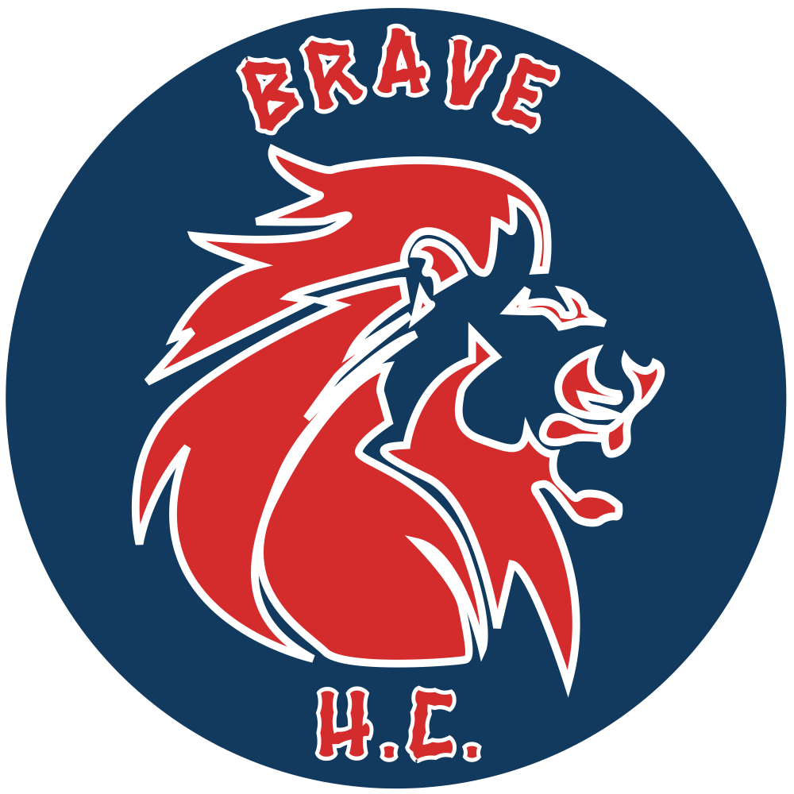

BRAVE H.C. · HOCKEYOS
THE AWARDS RACE2026–27 hockey season
Every game counts
Race for the hardware.
Follow the awards race as the season develops. Ratings come from the Brave H.C. workbook; you can open any score for the calculation behind it.
WINTER 2026/27
—HTO games logged
11Award categories
5Maximum on a race board
Current season
Rolaids Relief Man
Top call-up / relief player
Checking award data…
Team awards ballot
Voting is separate from the weekly model race.